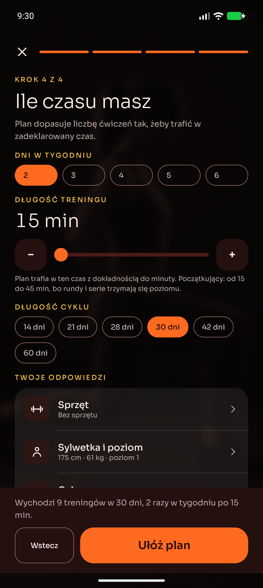
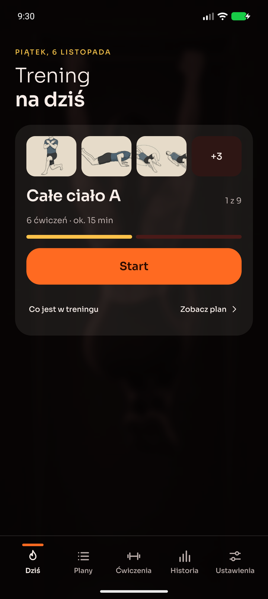
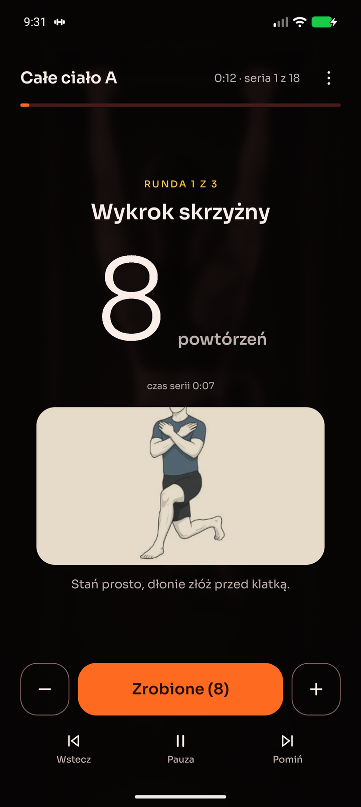
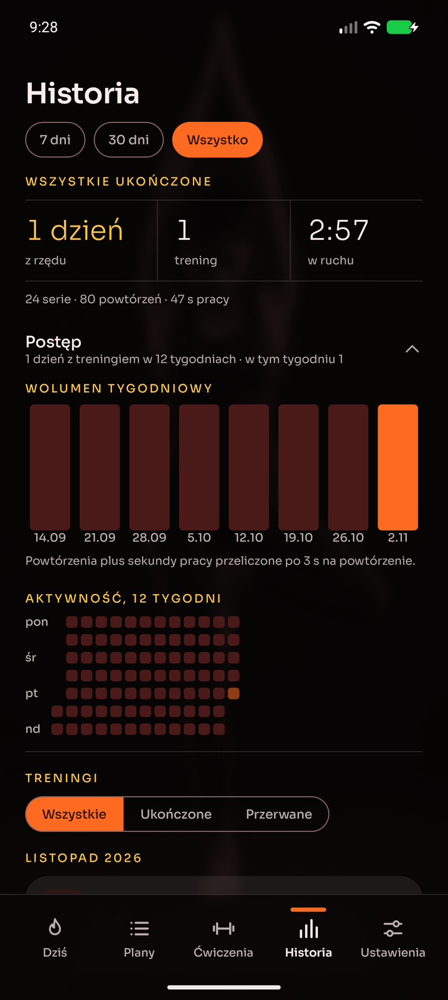
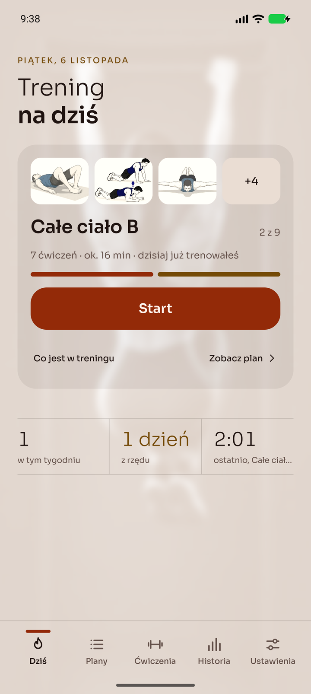

The plan builder lays out a cycle from your equipment, goal, level and the minutes you have. Or take one of eighteen ready-made programmes, write a plan of your own, or open one somebody sent you. Then a single screen shows today's workout and a single button.
No ads, no subscription, no account. The data stays on the phone.

Latest release: checking…
Exercise database: checking…
An APK to install from the phone. Android asks for permission to install from this source the first time. Later versions, and new releases of the exercise database, the app can fetch by itself, once you turn that on in Settings.
Download APKThe app speaks Polish and English: it follows the phone's language, or the one you pick in Settings. It needs Android 8.0 or newer, and it is not on Google Play, so the first install is a manual one.
A plan you do not have to assemble, a workout that runs itself, and a history that decides when to make it harder.
The Plans tab holds every plan you have and New plan: the plan builder, a ready-made programme, a plan of your own or a plan file. One plan is active, the others wait with their progress. A day you skip deletes nothing: the workout waits its turn.
The builder asks four things in turn: the equipment you own, your build and level, the goal, then the days a week and the minutes. It hits that length within a minute, and the same answers always give the same plan; nothing is drawn at random.
From an evening stretch to barbell basics, listed from gentle to demanding. Seven are built on books about training, and the app names the authors and the source. A programme that needs kit you lack takes a substitute, or says it cannot start.
68 kinds of equipment in six groups, from a mat and dumbbells to the machines of a commercial gym, each with a card that describes it. An exercise needs its whole kit, and without it the app offers a substitute for the same muscle group.
Counted reps and timed sets, rests you can extend, a beep on 3-2-1, vibration and a spoken announcement of what comes next. It keeps running with the screen off, and the notification carries a chronometer and the controls. The volume key confirms a set, so you need not reach for the screen.
After a workout, say More, Less or Not for me about any exercise: the target moves by two reps or five seconds, or another exercise takes its place. Complete a target and it proposes a harder step. The difficulty level changes whenever you want.
A plan goes out as one file, signed with a key that never leaves your phone and locked with a password if you want. Each plan has its statistics and a PDF report of how it went; history adds weekly volume and an activity calendar.
The library holds 790 exercises, each with an illustration. One it lacks you add yourself, with steps and a photo from the gallery or the camera, saved without location data, and use it in a plan of your own.
Two dark themes and two light ones, over a blurred photo picked each day from what your plans hold for today. On a tablet, lists and details sit side by side.
From the plan builder to the history that comes out of it, in Polish, in the default theme and in a light one.








Everything the app knows about you sits on your phone, and it stays there.
No ads, no subscription, no account, nothing collected. The only thing that goes out is the question about newer releases of the app and its exercise database, and only when you ask for it.
At the hour you pick, and only on a day you have not trained yet. Turn it off and the app stays quiet.
The whole history goes into one JSON file you keep yourself. There is no cloud to sync with and no copy on anyone else's server.